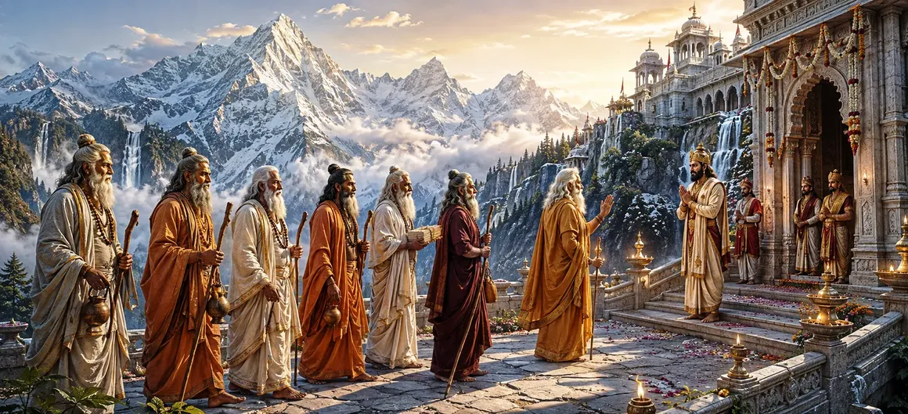

As preparations for the divine wedding continued, Lord Shiva entrusted an important responsibility to the Seven Great Sages. Acting as honored representatives, the Saptarishis journeyed to the kingdom of Himālaya to formally discuss the sacred marriage of Shiva and Pārvatī. Their arrival marked another significant step toward the fulfillment of a cosmic destiny awaited by gods and sages alike.
The Seven Sages accepted Shiva's instructions with reverence. Understanding the sacred significance of their mission, they prepared to represent the Lord with wisdom, dignity, and devotion.
Traveling through sacred regions and blessed landscapes, the sages proceeded toward the kingdom of Himālaya. Their presence radiated spiritual brilliance, attracting respect wherever they passed.
When the sages arrived, King Himālaya welcomed them with the highest honor. Knowing their reputation for wisdom and holiness, he regarded their visit as a blessing for his kingdom.
Following sacred traditions, the king offered seats, refreshments, and respectful greetings to the venerable sages. The atmosphere reflected mutual respect between spiritual wisdom and righteous kingship.
Although welcomed as honored guests, the sages had arrived with a sacred purpose. Their visit was not merely ceremonial but was intended to advance the divine plans surrounding Shiva and Pārvatī.
After properly honoring the sages, King Himālaya respectfully inquired about the purpose of their visit. He sensed that an important message accompanied their arrival.
The sages smiled gently and praised the virtues of King Himālaya. They spoke of his righteousness, devotion, and noble lineage before gradually introducing the purpose of their sacred mission.
The gathering became increasingly solemn as the conversation progressed. Both the king and the sages understood that decisions made during this meeting would influence events of divine significance.
Divine responsibilities should be carried out with sincerity and wisdom.
Honoring the wise opens the path to divine blessings.
Great events unfold through the cooperation of devotees and sages.
As news spread that the Seven Sages had arrived, anticipation grew throughout the kingdom. Many sensed that an important development regarding Pārvatī's future was about to be revealed.
The Seven Sages approached Himālaya not for personal gain but to fulfill a divine purpose. Their example teaches that true service means becoming an instrument of higher truth and acting with humility for the welfare of all.
The Saptarishis were revered throughout the three worlds for their wisdom and spiritual realization. Their words carried immense authority, and their presence signified that the matter under discussion was of extraordinary importance.
The purpose of the sages' journey would soon be fully revealed. The conversation was steadily moving toward the formal proposal that would unite Lord Shiva and Goddess Pārvatī in sacred marriage.
"When the wise act as instruments of the Divine, destiny unfolds with harmony and purpose."
The Seven Great Sages have now arrived before King Himālaya carrying a sacred purpose. As the royal court listens with attention, the moment approaches when the divine proposal will be formally presented. Continue to the next chapter to witness how Himālaya receives and accepts this blessed proposal.